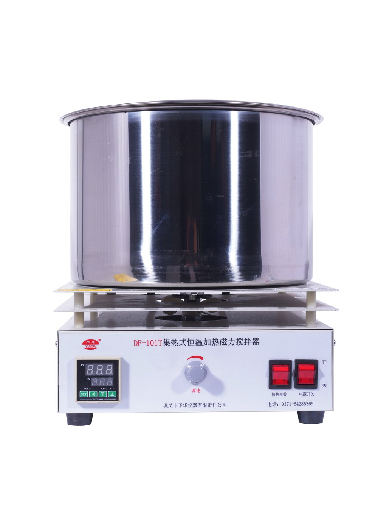

DF-101S · MODEL MANUAL
集热式恒温加热磁力搅拌器 DF-101S
Integrated laboratory unit combining constant-temperature heating and magnetic stirring. The source manual separates stirring, heating, control, mechanical size and operating environment.
Max 2000 ml0–2600 rpmAmbient–400°CDigital temperature control220V/50Hz

แหล่งข้อมูลรุ่น: 2026 product manual for DF-101S. Customized units follow their confirmed specification.
01 · Main technical parameters
ModelDF-101S
Power supply220V / 50Hz
Stirring methodStepless speed adjustment
Stirring speed0–2600 rpm
Maximum stirring capacity2000 ml
Heating temperatureAmbient to 400°C
Temperature controlDigital temperature control
Control characteristicIntelligent temperature control
Machine size250 × 235 × 250 mm
StructureIntegrated / one-piece configuration
02 · Functional components
Heat-collection bathStainless-steel bath
Stirring driveInternal magnetic field drives magnetic stir bar without shaft penetration
Temperature displayPV real-time temperature display
Set-temperature displaySV set-value display
Control keysSet / shift-auto-tune / decrease / increase
Speed adjustmentRotary knob
Support rodSUS304 rod in manual configuration
Heat isolationHeat shield separates heating section from electrical box
Working principle / design features
- Magnetic stirring and medium heating operate as two coordinated systems: the magnetic module rotates a stir bar inside the vessel while the heated bath transfers heat through water/oil or direct dry heating mode.
- The manual states heat-collection heating surrounds the vessel with strong heat radiation and is especially suitable for round-bottom flasks.
- The stainless heat-collection bath supports water bath, oil bath and dry-heating modes, subject to safe operating limits and suitable vessels.
- A DC high-power motor is used for high stirring torque with relatively low noise.
- The manual describes a high-strength NdFeB permanent magnet rotor to improve magnetic coupling and reduce stir-bar decoupling.
- The special stainless heating tube is described as having undergone high-temperature aging; the heating zone is thermally isolated from the control electronics.
- Digital control allows target temperature setting and automatic temperature maintenance.
Safety: do not run water/oil-bath mode without heat-transfer medium, do not allow liquid to overflow into the electrical section, and do not leave high-temperature heating unattended.